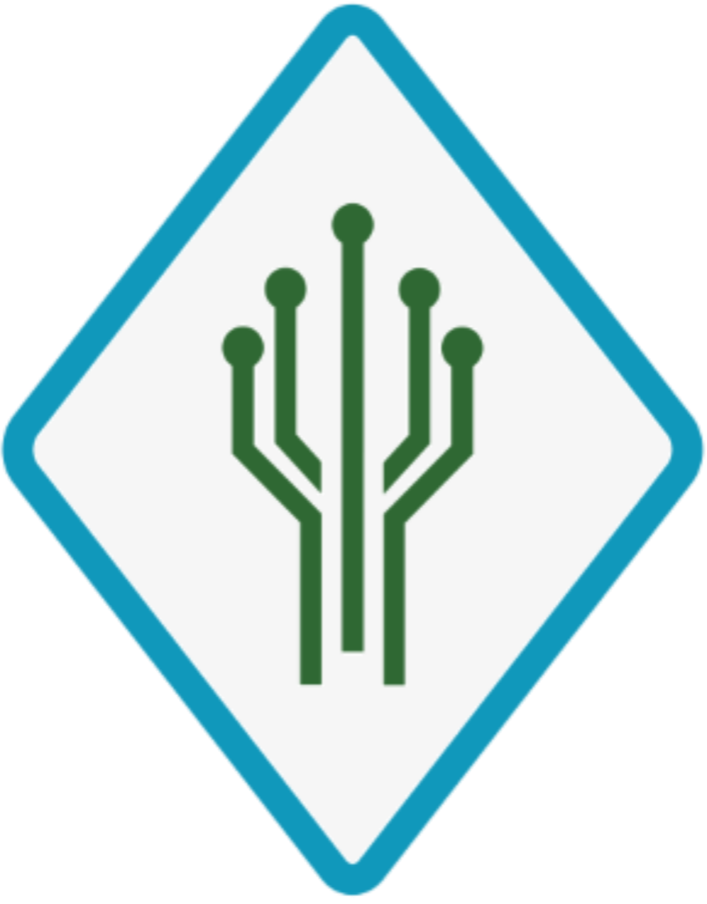

OUR HOSTS
FTC #18225 High Definition

First Tech Challenge (FTC) Team 18225 High Definition is a 2nd year veteran robotics team from Bellevue, Washington composed of 14 enthusiastic and motivated students from the 7th-12th grades. Our mission is to promote STEM and FIRST within our community to help establish the next generation of innovators!
Everstem Education
Everstem Education is a 501(c)(3) non-profit organization based in Washington State, USA. We are dedicated to making STEM educational opportunities more accessible for all students through free workshops, seminars, hackathon events and providing grants and mentorship for new FIRST Lego League (FLL) and FIRST Tech Challenge (FTC).